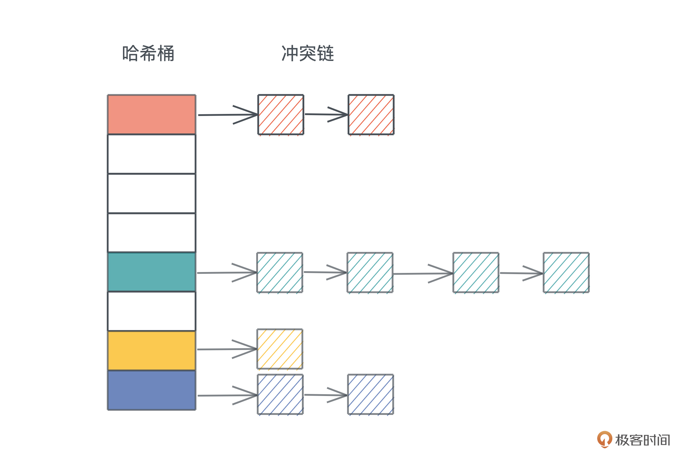
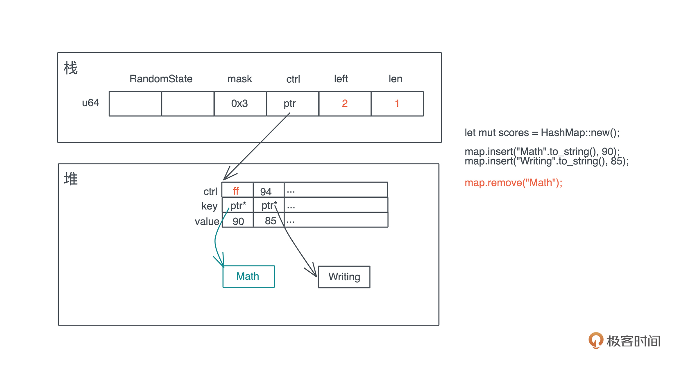

- 00 开篇词 让Rust成为你的下一门主力语言.md.html
- 01 内存：值放堆上还是放栈上，这是一个问题.md.html
- 02 串讲：编程开发中，那些你需要掌握的基本概念.md.html
- 03 初窥门径：从你的第一个Rust程序开始！.md.html
- 04 get hands dirty：来写个实用的CLI小工具.md.html
- 05 get hands dirty：做一个图片服务器有多难？.md.html
- 06 get hands dirty：SQL查询工具怎么一鱼多吃？.md.html
- 07 所有权：值的生杀大权到底在谁手上？.md.html
- 08 所有权：值的借用是如何工作的？.md.html
- 09 所有权：一个值可以有多个所有者么？.md.html
- 10 生命周期：你创建的值究竟能活多久？.md.html
- 11 内存管理：从创建到消亡，值都经历了什么？.md.html
- 12 类型系统：Rust的类型系统有什么特点？.md.html
- 13 类型系统：如何使用trait来定义接口？.md.html
- 14 类型系统：有哪些必须掌握的trait？.md.html
- 15 数据结构：这些浓眉大眼的结构竟然都是智能指针？.md.html
- 16 数据结构：Vec_T_、&[T]、Box_[T]_ ，你真的了解集合容器么？.md.html
- 17 数据结构：软件系统核心部件哈希表，内存如何布局？.md.html
- 18 错误处理：为什么Rust的错误处理与众不同？.md.html
- 19 闭包：FnOnce、FnMut和Fn，为什么有这么多类型？.md.html
- 20 4 Steps ：如何更好地阅读Rust源码？.md.html
- 21 阶段实操（1）：构建一个简单的KV server-基本流程.md.html
- 22 阶段实操（2）：构建一个简单的KV server-基本流程.md.html
- 23 类型系统：如何在实战中使用泛型编程？.md.html
- 24 类型系统：如何在实战中使用trait object？.md.html
- 25 类型系统：如何围绕trait来设计和架构系统？.md.html
- 26 阶段实操（3）：构建一个简单的KV server-高级trait技巧.md.html
- 27 生态系统：有哪些常有的Rust库可以为我所用？.md.html
- 28 网络开发（上）：如何使用Rust处理网络请求？.md.html
- 29 网络开发（下）：如何使用Rust处理网络请求？.md.html
- 30 Unsafe Rust：如何用C++的方式打开Rust？.md.html
- 31 FFI：Rust如何和你的语言架起沟通桥梁？.md.html
- 32 实操项目：使用PyO3开发Python3模块.md.html
- 33 并发处理（上）：从atomics到Channel，Rust都提供了什么工具？.md.html
- 34 并发处理（下）：从atomics到Channel，Rust都提供了什么工具？.md.html
- 35 实操项目：如何实现一个基本的MPSC channel？.md.html
- 36 阶段实操（4）：构建一个简单的KV server-网络处理.md.html
- 37 阶段实操（5）：构建一个简单的KV server-网络安全.md.html
- 38 异步处理：Future是什么？它和async_await是什么关系？.md.html
- 39 异步处理：async_await内部是怎么实现的？.md.html
- 40 异步处理：如何处理异步IO？.md.html
- 41 阶段实操（6）：构建一个简单的KV server-异步处理.md.html
- 42 阶段实操（7）：构建一个简单的KV server-如何做大的重构？.md.html
- 43 生产环境：真实世界下的一个Rust项目包含哪些要素？.md.html
- 44 数据处理：应用程序和数据如何打交道？.md.html
- 45 阶段实操（8）：构建一个简单的KV server-配置_测试_监控_CI_CD.md.html
- 46 软件架构：如何用Rust架构复杂系统？.md.html
- 加餐 Rust2021版次问世了！.md.html
- 加餐 代码即数据：为什么我们需要宏编程能力？.md.html
- 加餐 宏编程（上）：用最“笨”的方式撰写宏.md.html
- 加餐 宏编程（下）：用 syn_quote 优雅地构建宏.md.html
- 加餐 愚昧之巅：你的Rust学习常见问题汇总.md.html
- 加餐 期中测试：参考实现讲解.md.html
- 加餐 期中测试：来写一个简单的grep命令行.md.html
- 加餐 这个专栏你可以怎么学，以及Rust是否值得学？.md.html
- 大咖助场 开悟之坡（上）：Rust的现状、机遇与挑战.md.html
- 大咖助场 开悟之坡（下）：Rust的现状、机遇与挑战.md.html
- 特别策划 学习锦囊（一）：听听课代表们怎么说.md.html
- 特别策划 学习锦囊（三）：听听课代表们怎么说.md.html
- 特别策划 学习锦囊（二）：听听课代表们怎么说.md.html
- 用户故事 绝望之谷：改变从学习开始.md.html
- 用户故事 语言不仅是工具，还是思维方式.md.html
- 结束语 永续之原：Rust学习，如何持续精进？.md.html
- 捐赠
17 数据结构：软件系统核心部件哈希表，内存如何布局？
你好，我是陈天。
上一讲我们深入学习了切片，对比了数组、列表、字符串和它们的切片以及切片引用的关系。今天就继续讲 Rust 里另一个非常重要的集合容器：HashMap，也就是哈希表。
如果谈论软件开发中最重要、出镜率最高的数据结构，那哈希表一定位列其中。很多编程语言甚至将哈希表作为一种内置的数据结构，做进了语言的核心。比如 PHP 的关联数组（associate array）、Python 的字典（dict）、JavaScript 的对象（object）和 Map。
Google 的工程师Matt Kulukundis 在 cppCon 2017 做的一个演讲，说：全世界 Google 的服务器上 1% 的 CPU 时间用来做哈希表的计算，超过 4% 的内存用来存储哈希表。足以证明哈希表的重要性。
我们知道，哈希表和列表类似，都用于处理需要随机访问的数据结构。如果数据结构的输入和输出能一一对应，那么可以使用列表，如果无法一一对应，那么就需要使用哈希表。-

Rust 的哈希表
那 Rust 为我们提供了什么样的哈希表呢？它长什么样？性能如何？我们从官方文档学起。
如果你打开 HashMap 的文档，会看到这样一句话：
A hash map implemented with quadratic probing and SIMD lookup.
这一看就有点肾上腺素上升了，出现了两个高端词汇：二次探查（quadratic probing）和 SIMD 查表（SIMD lookup），都是什么意思？它们是Rust哈希表算法的设计核心，我们今天的学习也会围绕着这两个词展开，所以别着急，等学完相信你会理解这句话的。
先把基础理论扫一遍。哈希表最核心的特点就是：巨量的可能输入和有限的哈希表容量。这就会引发哈希冲突，也就是两个或者多个输入的哈希被映射到了同一个位置，所以我们要能够处理哈希冲突。
要解决冲突，首先可以通过更好的、分布更均匀的哈希函数，以及使用更大的哈希表来缓解冲突，但无法完全解决，所以我们还需要使用冲突解决机制。
如何解决冲突？
理论上，主要的冲突解决机制有链地址法（chaining）和开放寻址法（open addressing）。
链地址法，我们比较熟悉，就是把落在同一个哈希上的数据用单链表或者双链表连接起来。这样在查找的时候，先找到对应的哈希桶（hash bucket），然后再在冲突链上挨个比较，直到找到匹配的项：
冲突链处理哈希冲突非常直观，很容易理解和撰写代码，但缺点是哈希表和冲突链使用了不同的内存，对缓存不友好。
开放寻址法把整个哈希表看做一个大数组，不引入额外的内存，当冲突产生时，按照一定的规则把数据插入到其它空闲的位置。比如线性探寻（linear probing）在出现哈希冲突时，不断往后探寻，直到找到空闲的位置插入。
而二次探查，理论上是在冲突发生时，不断探寻哈希位置加减 n 的二次方，找到空闲的位置插入，我们看图，更容易理解：- （图中示意是理论上的处理方法，实际为了性能会有很多不同的处理。）
开放寻址还有其它方案，比如二次哈希什么的，今天就不详细介绍了。
好，搞明白哈希表的二次探查的理论知识，我们可以推测，Rust 哈希表不是用冲突链来解决哈希冲突，而是用开放寻址法的二次探查来解决的。当然，后面会讲到 Rust 的二次探查和理论的处理方式有些差别。
而另一个关键词，使用 SIMD 做单指令多数据的查表，也和一会要讲到 Rust 哈希表巧妙的内存布局息息相关。
HashMap 的数据结构
进入正题，我们来看看 Rust 哈希表的数据结构是什么样子的，打开标准库的 源代码：
use hashbrown::hash_map as base;
#[derive(Clone)]
pub struct RandomState {
k0: u64,
k1: u64,
}
pub struct HashMap<K, V, S = RandomState> {
base: base::HashMap<K, V, S>,
}
可以看到，HashMap 有三个泛型参数，K 和 V 代表 key/value 的类型，S 是哈希算法的状态，它默认是 RandomState，占两个 u64。RandomState 使用 SipHash 作为缺省的哈希算法，它是一个加密安全的哈希函数（cryptographically secure hashing）。
从定义中还能看到，Rust 的 HashMap 复用了 hashbrown 的 HashMap。hashbrown 是 Rust 下对 Google Swiss Table 的一个改进版实现，我们打开 hashbrown 的代码，看它的结构：
pub struct HashMap<K, V, S = DefaultHashBuilder, A: Allocator + Clone = Global> {
pub(crate) hash_builder: S,
pub(crate) table: RawTable<(K, V), A>,
}
可以看到，HashMap 里有两个域，一个是 hash_builder，类型是刚才我们提到的标准库使用的 RandomState，还有一个是具体的 RawTable：
pub struct RawTable<T, A: Allocator + Clone = Global> {
table: RawTableInner<A>,
// Tell dropck that we own instances of T.
marker: PhantomData<T>,
}
struct RawTableInner<A> {
// Mask to get an index from a hash value. The value is one less than the
// number of buckets in the table.
bucket_mask: usize,
// [Padding], T1, T2, ..., Tlast, C1, C2, ...
// ^ points here
ctrl: NonNull<u8>,
// Number of elements that can be inserted before we need to grow the table
growth_left: usize,
// Number of elements in the table, only really used by len()
items: usize,
alloc: A,
}
RawTable 中，实际上有意义的数据结构是 RawTableInner，前四个字段很重要，我们一会讲HashMap的内存布局会再提到：
- usize 的 bucket_mask，是哈希表中哈希桶的数量减一；
- 名字叫 ctrl 的指针，它指向哈希表堆内存末端的 ctrl 区；
- usize 的字段 growth_left，指哈希表在下次自动增长前还能存储多少数据；
- usize 的 items，表明哈希表现在有多少数据。
这里最后的 alloc 字段，和 RawTable 的 marker 一样，只是一个用来占位的类型，我们现在只需知道，它用来分配在堆上的内存。
HashMap 的基本使用方法
数据结构搞清楚，我们再看具体使用方法。Rust 哈希表的使用很简单，它提供了一系列很方便的方法，使用起来和其它语言非常类似，你只要看看文档，就很容易理解。我们来写段代码，尝试一下（代码）：
use std::collections::HashMap;
fn main() {
let mut map = HashMap::new();
explain("empty", &map);
map.insert('a', 1);
explain("added 1", &map);
map.insert('b', 2);
map.insert('c', 3);
explain("added 3", &map);
map.insert('d', 4);
explain("added 4", &map);
// get 时需要使用引用，并且也返回引用
assert_eq!(map.get(&'a'), Some(&1));
assert_eq!(map.get_key_value(&'b'), Some((&'b', &2)));
map.remove(&'a');
// 删除后就找不到了
assert_eq!(map.contains_key(&'a'), false);
assert_eq!(map.get(&'a'), None);
explain("removed", &map);
// shrink 后哈希表变小
map.shrink_to_fit();
explain("shrinked", &map);
}
fn explain<K, V>(name: &str, map: &HashMap<K, V>) {
println!("{}: len: {}, cap: {}", name, map.len(), map.capacity());
}
运行这段代码，我们可以看到这样的输出：
empty: len: 0, cap: 0
added 1: len: 1, cap: 3
added 3: len: 3, cap: 3
added 4: len: 4, cap: 7
removed: len: 3, cap: 7
shrinked: len: 3, cap: 3
可以看到，当 HashMap::new() 时，它并没有分配空间，容量为零，随着哈希表不断插入数据，它会以 2的幂减一的方式增长，最小是 3。当删除表中的数据时，原有的表大小不变，只有显式地调用 shrink_to_fit，才会让哈希表变小。
HashMap 的内存布局
但是通过 HashMap 的公开接口，我们无法看到 HashMap 在内存中是如何布局的，还是需要借助之前使用过的 std::mem::transmute 方法，来把数据结构打出来。我们把刚才的代码改一改（代码）：
use std::collections::HashMap;
fn main() {
let map = HashMap::new();
let mut map = explain("empty", map);
map.insert('a', 1);
let mut map = explain("added 1", map);
map.insert('b', 2);
map.insert('c', 3);
let mut map = explain("added 3", map);
map.insert('d', 4);
let mut map = explain("added 4", map);
map.remove(&'a');
explain("final", map);
}
// HashMap 结构有两个 u64 的 RandomState，然后是四个 usize，
// 分别是 bucket_mask, ctrl, growth_left 和 items
// 我们 transmute 打印之后，再 transmute 回去
fn explain<K, V>(name: &str, map: HashMap<K, V>) -> HashMap<K, V> {
let arr: [usize; 6] = unsafe { std::mem::transmute(map) };
println!(
"{}: bucket_mask 0x{:x}, ctrl 0x{:x}, growth_left: {}, items: {}",
name, arr[2], arr[3], arr[4], arr[5]
);
unsafe { std::mem::transmute(arr) }
}
运行之后，可以看到：
empty: bucket_mask 0x0, ctrl 0x1056df820, growth_left: 0, items: 0
added 1: bucket_mask 0x3, ctrl 0x7fa0d1405e30, growth_left: 2, items: 1
added 3: bucket_mask 0x3, ctrl 0x7fa0d1405e30, growth_left: 0, items: 3
added 4: bucket_mask 0x7, ctrl 0x7fa0d1405e90, growth_left: 3, items: 4
final: bucket_mask 0x7, ctrl 0x7fa0d1405e90, growth_left: 4, items: 3
有意思，我们发现在运行的过程中，ctrl 对应的堆地址发生了改变。
在我的 OS X 下，一开始哈希表为空，ctrl 地址看上去是一个 TEXT/RODATA 段的地址，应该是指向了一个默认的空表地址；插入第一个数据后，哈希表分配了 4 个 bucket，ctrl 地址发生改变；在插入三个数据后，growth_left 为零，再插入时，哈希表重新分配，ctrl 地址继续改变。
刚才在探索 HashMap 数据结构时，说过 ctrl 是一个指向哈希表堆地址末端 ctrl 区的地址，所以我们可以通过这个地址，计算出哈希表堆地址的起始地址。
因为哈希表有 8 个 bucket（0x7 + 1），每个 bucket 大小是 key（char） + value（i32） 的大小，也就是 8 个字节，所以一共是 64 个字节。对于这个例子，通过 ctrl 地址减去 64，就可以得到哈希表的堆内存起始地址。然后，我们可以用 rust-gdb/rust-lldb 来打印这个内存（如果你对 rust-gdb/rust-lldb 感兴趣，可以看文末的参考阅读）。
这里我用 Linux 下的 rust-gdb 设置断点，依次查看哈希表有一个、三个、四个值，以及删除一个值的状态：
❯ rust-gdb ~/.target/debug/hashmap2
GNU gdb (Ubuntu 9.2-0ubuntu2) 9.2
...
(gdb) b hashmap2.rs:32
Breakpoint 1 at 0xa43e: file src/hashmap2.rs, line 32.
(gdb) r
Starting program: /home/tchen/.target/debug/hashmap2
...
# 最初的状态，哈希表为空
empty: bucket_mask 0x0, ctrl 0x555555597be0, growth_left: 0, items: 0
Breakpoint 1, hashmap2::explain (name=..., map=...) at src/hashmap2.rs:32
32 unsafe { std::mem::transmute(arr) }
(gdb) c
Continuing.
# 插入了一个元素后，bucket 有 4 个（0x3+1），堆地址起始位置 0x5555555a7af0 - 4*8(0x20)
added 1: bucket_mask 0x3, ctrl 0x5555555a7af0, growth_left: 2, items: 1
Breakpoint 1, hashmap2::explain (name=..., map=...) at src/hashmap2.rs:32
32 unsafe { std::mem::transmute(arr) }
(gdb) x /12x 0x5555555a7ad0
0x5555555a7ad0: 0x00000061 0x00000001 0x00000000 0x00000000
0x5555555a7ae0: 0x00000000 0x00000000 0x00000000 0x00000000
0x5555555a7af0: 0x0affffff 0xffffffff 0xffffffff 0xffffffff
(gdb) c
Continuing.
# 插入了三个元素后，哈希表没有剩余空间，堆地址起始位置不变 0x5555555a7af0 - 4*8(0x20)
added 3: bucket_mask 0x3, ctrl 0x5555555a7af0, growth_left: 0, items: 3
Breakpoint 1, hashmap2::explain (name=..., map=...) at src/hashmap2.rs:32
32 unsafe { std::mem::transmute(arr) }
(gdb) x /12x 0x5555555a7ad0
0x5555555a7ad0: 0x00000061 0x00000001 0x00000062 0x00000002
0x5555555a7ae0: 0x00000000 0x00000000 0x00000063 0x00000003
0x5555555a7af0: 0x0a72ff02 0xffffffff 0xffffffff 0xffffffff
(gdb) c
Continuing.
# 插入第四个元素后，哈希表扩容，堆地址起始位置变为 0x5555555a7b50 - 8*8(0x40)
added 4: bucket_mask 0x7, ctrl 0x5555555a7b50, growth_left: 3, items: 4
Breakpoint 1, hashmap2::explain (name=..., map=...) at src/hashmap2.rs:32
32 unsafe { std::mem::transmute(arr) }
(gdb) x /20x 0x5555555a7b10
0x5555555a7b10: 0x00000061 0x00000001 0x00000000 0x00000000
0x5555555a7b20: 0x00000064 0x00000004 0x00000063 0x00000003
0x5555555a7b30: 0x00000000 0x00000000 0x00000062 0x00000002
0x5555555a7b40: 0x00000000 0x00000000 0x00000000 0x00000000
0x5555555a7b50: 0xff72ffff 0x0aff6502 0xffffffff 0xffffffff
(gdb) c
Continuing.
# 删除 a 后，剩余 4 个位置。注意 ctrl bit 的变化，以及 0x61 0x1 并没有被清除
final: bucket_mask 0x7, ctrl 0x5555555a7b50, growth_left: 4, items: 3
Breakpoint 1, hashmap2::explain (name=..., map=...) at src/hashmap2.rs:32
32 unsafe { std::mem::transmute(arr) }
(gdb) x /20x 0x5555555a7b10
0x5555555a7b10: 0x00000061 0x00000001 0x00000000 0x00000000
0x5555555a7b20: 0x00000064 0x00000004 0x00000063 0x00000003
0x5555555a7b30: 0x00000000 0x00000000 0x00000062 0x00000002
0x5555555a7b40: 0x00000000 0x00000000 0x00000000 0x00000000
0x5555555a7b50: 0xff72ffff 0xffff6502 0xffffffff 0xffffffff
这段输出蕴藏了很多信息，我们结合示意图来仔细梳理。
首先，插入第一个元素 ‘a’: 1 后，哈希表的内存布局如下：
key ‘a’ 的 hash 和 bucket_mask 0x3 运算后得到第 0 个位置插入。同时，这个 hash 的头 7 位取出来，在 ctrl 表中对应的位置，也就是第 0 个字节，把这个值写入。
要理解这个步骤，关键就是要搞清楚这个 ctrl 表是什么。
ctrl 表
ctrl 表的主要目的是快速查找。它的设计非常优雅，值得我们学习。
一张 ctrl 表里，有若干个 128bit 或者说 16 个字节的分组（group），group 里的每个字节叫 ctrl byte，对应一个 bucket，那么一个 group 对应 16 个 bucket。如果一个 bucket 对应的 ctrl byte 首位不为 1，就表示这个 ctrl byte 被使用；如果所有位都是 1，或者说这个字节是 0xff，那么它是空闲的。
一组 control byte 的整个 128 bit 的数据，可以通过一条指令被加载进来，然后和某个值进行 mask，找到它所在的位置。这就是一开始提到的SIMD 查表。
我们知道，现代 CPU 都支持单指令多数据集的操作，而Rust 充分利用了 CPU 这种能力，一条指令可以让多个相关的数据载入到缓存中处理，大大加快查表的速度。所以，Rust 的哈希表查询的效率非常高。
具体怎么操作，我们来看 HashMap 是如何通过 ctrl 表来进行数据查询的。假设这张表里已经添加了一些数据，我们现在要查找 key 为 ‘c’ 的数据：
- 首先对 ‘c’ 做哈希，得到一个哈希值 h；
- 把 h 跟 bucket_mask 做与，得到一个值，图中是 139；
- 拿着这个 139，找到对应的 ctrl group 的起始位置，因为 ctrl group 以 16 为一组，所以这里找到 128；
- 用 SIMD 指令加载从 128 对应地址开始的 16 个字节；
- 对 hash 取头 7 个 bit，然后和刚刚取出的 16 个字节一起做与，找到对应的匹配，如果找到了，它（们）很大概率是要找的值；
- 如果不是，那么以二次探查（以 16 的倍数不断累积）的方式往后查找，直到找到为止。
你可以结合下图理解这个算法：
所以，当 HashMap 插入和删除数据，以及因此导致重新分配的时候，主要工作就是在维护这张 ctrl 表和数据的对应。
因为 ctrl 表是所有操作最先触及的内存，所以，在 HashMap 的结构中，堆内存的指针直接指向 ctrl 表，而不是指向堆内存的起始位置，这样可以减少一次内存的访问。
哈希表重新分配与增长
好，回到刚才讲的内存布局继续说。在插入第一条数据后，我们的哈希表只有 4 个 bucket，所以只有头 4 个字节的 ctrl 表有用。随着哈希表的增长，bucket 不够，就会导致重新分配。由于 bucket_mask 永远比 bucket 数量少 1，所以插入三个元素后就会重新分配。
根据 rust-gdb 中得到的信息，我们看插入三个元素后没有剩余空间的哈希表，在加入 ‘d’: 4 时，是如何增长的。
首先，哈希表会按幂扩容，从 4 个 bucket 扩展到 8 个 bucket。
这会导致分配新的堆内存，然后原来的 ctrl table 和对应的kv数据会被移动到新的内存中。这个例子里因为 char 和 i32 实现了 Copy trait，所以是拷贝；如果 key 的类型是 String，那么只有 String 的 24 个字节 (ptr|cap|len) 的结构被移动，String 的实际内存不需要变动。
在移动的过程中，会涉及哈希的重分配。从下图可以看到，‘a’/‘c’ 的相对位置和它们的 ctrl byte 没有变化，但重新做 hash 后，‘b’ 的 ctrl byte 和位置都发生了变化：-

删除一个值
明白了哈希表是如何增长的，我们再来看删除的时候会发生什么。
当要在哈希表中删除一个值时，整个过程和查找类似，先要找到要被删除的 key 所在的位置。在找到具体位置后，并不需要实际清除内存，只需要将它的 ctrl byte 设回 0xff（或者标记成删除状态）。这样，这个 bucket 就可以被再次使用了：-

这里有一个问题，当 key/value 有额外的内存时，比如 String，它的内存不会立即回收，只有在下一次对应的 bucket 被使用时，让 HashMap 不再拥有这个 String 的所有权之后，这个 String 的内存才被回收。我们看下面的示意图：- 
一般来说，这并不会带来什么问题，顶多是内存占用率稍高一些。但某些极端情况下，比如在哈希表中添加大量内容，又删除大量内容后运行，这时你可以通过 shrink_to_fit/shrink_to 释放掉不需要的内存。
让自定义的数据结构做 Hash key
有时候，我们需要让自定义的数据结构成为 HashMap 的 key。此时，要使用到三个 trait：Hash、PartialEq、Eq，不过这三个 trait 都可以通过派生宏自动生成。其中：
- 实现了 Hash ，可以让数据结构计算哈希；
- 实现了 PartialEq/Eq，可以让数据结构进行相等和不相等的比较。Eq 实现了比较的自反性（a == a）、对称性（a == b 则 b == a）以及传递性（a == b，b == c，则 a == c），PartialEq 没有实现自反性。
我们可以写个例子，看看自定义数据结构如何支持 HashMap：
use std::{
collections::{hash_map::DefaultHasher, HashMap},
hash::{Hash, Hasher},
};
// 如果要支持 Hash，可以用 #[derive(Hash)]，前提是每个字段都实现了 Hash
// 如果要能作为 HashMap 的 key，还需要 PartialEq 和 Eq
#[derive(Debug, Hash, PartialEq, Eq)]
struct Student<'a> {
name: &'a str,
age: u8,
}
impl<'a> Student<'a> {
pub fn new(name: &'a str, age: u8) -> Self {
Self { name, age }
}
}
fn main() {
let mut hasher = DefaultHasher::new();
let student = Student::new("Tyr", 18);
// 实现了 Hash 的数据结构可以直接调用 hash 方法
student.hash(&mut hasher);
let mut map = HashMap::new();
// 实现了 Hash/PartialEq/Eq 的数据结构可以作为 HashMap 的 key
map.insert(student, vec!["Math", "Writing"]);
println!("hash: 0x{:x}, map: {:?}", hasher.finish(), map);
}
HashSet/BTreeMap/BTreeSet
最后我们简单讲讲和 HashMap 相关的其它几个数据结构。
有时我们只需要简单确认元素是否在集合中，如果用 HashMap 就有些浪费空间了。这时可以用HashSet，它就是简化的 HashMap，可以用来存放无序的集合，定义直接是 HashMap
use hashbrown::hash_set as base;
pub struct HashSet<T, S = RandomState> {
base: base::HashSet<T, S>,
}
pub struct HashSet<T, S = DefaultHashBuilder, A: Allocator + Clone = Global> {
pub(crate) map: HashMap<T, (), S, A>,
}
使用 HashSet 查看一个元素是否属于集合的效率非常高。
另一个和 HashMap 一样常用的数据结构就是BTreeMap了。BTreeMap 是内部使用 B-tree 来组织哈希表的数据结构。另外 BTreeSet 和 HashSet 类似，是 BTreeMap 的简化版，可以用来存放有序集合。
我们这里重点看下BTreeMap，它的数据结构如下：
pub struct BTreeMap<K, V> {
root: Option<Root<K, V>>,
length: usize,
}
pub type Root<K, V> = NodeRef<marker::Owned, K, V, marker::LeafOrInternal>;
pub struct NodeRef<BorrowType, K, V, Type> {
height: usize,
node: NonNull<LeafNode<K, V>>,
_marker: PhantomData<(BorrowType, Type)>,
}
struct LeafNode<K, V> {
parent: Option<NonNull<InternalNode<K, V>>>,
parent_idx: MaybeUninit<u16>,
len: u16,
keys: [MaybeUninit<K>; CAPACITY],
vals: [MaybeUninit<V>; CAPACITY],
}
struct InternalNode<K, V> {
data: LeafNode<K, V>,
edges: [MaybeUninit<BoxedNode<K, V>>; 2 * B],
}
和 HashMap 不同的是，BTreeMap 是有序的。我们看个例子（代码）:
use std::collections::BTreeMap;
fn main() {
let map = BTreeMap::new();
let mut map = explain("empty", map);
for i in 0..16usize {
map.insert(format!("Tyr {}", i), i);
}
let mut map = explain("added", map);
map.remove("Tyr 1");
let map = explain("remove 1", map);
for item in map.iter() {
println!("{:?}", item);
}
}
// BTreeMap 结构有 height，node 和 length
// 我们 transmute 打印之后，再 transmute 回去
fn explain<K, V>(name: &str, map: BTreeMap<K, V>) -> BTreeMap<K, V> {
let arr: [usize; 3] = unsafe { std::mem::transmute(map) };
println!(
"{}: height: {}, root node: 0x{:x}, len: 0x{:x}",
name, arr[0], arr[1], arr[2]
);
unsafe { std::mem::transmute(arr) }
}
它的输出如下：
empty: height: 0, root node: 0x0, len: 0x0
added: height: 1, root node: 0x7f8286406190, len: 0x10
remove 1: height: 1, root node: 0x7f8286406190, len: 0xf
("Tyr 0", 0)
("Tyr 10", 10)
("Tyr 11", 11)
("Tyr 12", 12)
("Tyr 13", 13)
("Tyr 14", 14)
("Tyr 15", 15)
("Tyr 2", 2)
("Tyr 3", 3)
("Tyr 4", 4)
("Tyr 5", 5)
("Tyr 6", 6)
("Tyr 7", 7)
("Tyr 8", 8)
("Tyr 9", 9)
可以看到，在遍历时，BTreeMap 会按照 key 的顺序把值打印出来。如果你想让自定义的数据结构可以作为 BTreeMap 的 key，那么需要实现 PartialOrd 和 Ord，这两者的关系和 PartialEq/Eq 类似，PartialOrd 也没有实现自反性。同样的，PartialOrd 和 Ord 也可以通过派生宏来实现。
小结
在学习数据结构的时候，常用数据结构的内存布局和基本算法你一定要理解清楚，对它在不同情况下如何增长，也要尽量做到心里有数。
这一讲我们花大精力详细学习了 HashMap 的数据结构以及算法的基本思路，算是抛砖引玉。这门课无论多深入讲解，也只能触及 Rust 整个生态圈的九牛一毛，不可能面面俱到。
我的原则是“授人以鱼不如授人以渔”，在你掌握这样的分析方法后，以后遇到标准库或者第三方库的其它的数据结构，也可以用类似的方法深入探索学习。
此外，我们程序员学东西，会用是第一层，知道它是如何设计的是第二层，能够自己写出来才是第三层。Rust借鉴的 Google Swiss table 算法简单精巧，虽然 hashbrown 在实现时，为了最大化性能和利用 SSE 指令集，使用了很多 unsafe 代码，但我们撰写一个性能不那么好的 safe 版本，并不是复杂的事情，非常推荐你实现一下。
集合类型我们就暂时讲解到这里，未来实战要使用到某些数据结构时，比如 VecDeque，我们再深入探索。其他的集合类型，你也可以在要用的时候自行阅读文档。
如果你想了解这两讲中集合类型的时间复杂度，可以看下表（来源）：
思考题
1.修改下面代码的错误，使其编译通过（代码）。
use std::collections::BTreeMap;
#[derive(Debug)]
struct Name {
pub name: String,
pub flags: u32,
}
impl Name {
pub fn new(name: impl AsRef<str>, flags: u32) -> Self {
Self {
name: name.as_ref().to_string(),
flags,
}
}
}
fn main() {
let mut map = BTreeMap::new();
map.insert(Name::new("/etc/password", 0x1), 12);
map.insert(Name::new("/etc/hosts", 0x1), 4);
map.insert(Name::new("/home/tchen", 0x0), 28);
for item in map.iter() {
println!("{:?}", item);
}
}
2.思考一下，如果一个 session 表的 key 是 (Source IP、Source Port、Dst IP、Dst Port、Proto) 这样的长度 15 个字节的五元组，value 是 200 字节的 Session 结构，要容纳 1200000 个 Session，整个哈希表要占多大的堆内存？内存的利用率如何？
3.使用文中同样的方式，结合 rust-gdb/rust-lldb 探索 BTreeMap。你能画出来在插入以 26 个字母为 key，1～26 为 value 后的 BTreeMap 的内存布局么？
今天你完成了Rust学习的第17次打卡，我们下节课见。
参考资料
1.为什么 Rust 的 HashMap 要缺省采用加密安全的哈希算法？
我们知道哈希表在软件系统中的重要地位，但哈希表在最坏情况下，如果绝大多数 key 的 hash 都碰撞在一起，性能会到 O(n)，这会极大拖累系统的效率。
比如 1M 大小的 session 表，正常情况下查表速度是 O(1)，但极端情况下，需要比较 1M 个数据后才能找到，这样的系统就容易被 DoS 攻击。所以如果不是加密安全的哈希函数，只要黑客知道哈希算法，就可以构造出大量的 key 产生足够多的哈希碰撞，造成目标系统 DoS。
SipHash 就是为了回应 DoS 攻击而创建的哈希算法，虽然和 sha2 这样的加密哈希不同（不要将 SipHash 用于加密！），但它可以提供类似等级的安全性。把 SipHash 作为 HashMap 的缺省的哈希算法，Rust 可以避免开发者在不知情的情况下被 DoS，就像曾经在 Web 世界发生的那样。
当然，这一切的代价是性能损耗，虽然 SipHash 非常快，但它比 hashbrown 缺省使用的 Ahash 慢了不少。如果你确定使用的 HashMap 不需要 DoS 防护（比如一个完全内部使用的 HashMap），那么可以用 Ahash 来替换。你只需要使用 Ahash 提供的 RandomState 即可：
use ahash::{AHasher, RandomState};
use std::collections::HashMap;
let mut map: HashMap<char, i32, RandomState> = HashMap::default();
map.insert('a', 1);
2.如何使用 rust-gdb/rust-lldb？
之前的愚昧之巅[加餐]提过 gdb/lldb ，今天就是使用示例。没有使用过的朋友，可以看看它们的文档了解一下。
gdb 适合在 Linux 下，lldb 可以在 OS X 下调试 Rust 程序。rust-gdb/rust-lldb 提供了一些对 Rust 更友好的 pretty-print 功能，在安装 Rust 时，它们也会被安装。使用过 gdb 的同学，可以看 gdb 速查手册，也可以看看 gdb/lldb 命令对应手册。
我一般不用它们调试程序。不管任何语言，如果开发时，你发现自己总在设置断点调试程序，说明你撰写代码的方式有问题。要么，没有把接口和算法设计清楚，想到哪写到哪；要么，是你的函数写得过于复杂，太多状态纠缠，没有遵循 SRP（Single Responsibility Principle）。
好的代码是写出来的，不是调出来的。与其把时间花在调试上，不如把时间花在设计、日志，以及单元测试上。所以，gdb/lldb 对我来说，是一个理解数据结构在内存中布局以及探索算法如何运行的工具。你可以仔细阅读文中展示的 gdb session 和与之相关的代码，看看如何构造代码来结合 gdb 探索 HashMap 在不同状态下的行为。
如果你觉得有收获，也欢迎分享给你身边的朋友，邀TA一起讨论～
© 2019 - 2023 Liangliang Lee. Powered by gin and hexo-theme-book.